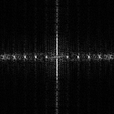

Name: Rongsheng Qian
Student No: 301449387
Date: Jan 27 2023
I have not cheated in any way when doing this assignment, I did it on my own. I may have asked questions about the assignment on Piazza, I know that’s totally fine and even encouraged. I also already know that this class is graded on a curve. I realize that if I cheat and by some miracle not get caught, any increase in my grade will in turn shift the curve and result in lower grades for my classmates. Any undeserved extra grade would come at the cost of all others. That’s horrible! I would never do it.

The high frequency in frequency domain are corrupted, which is collided with each other. The intuitive reflection is that there is severe fog around it. In spacial domain, we can see some small aliasing in the vertical railings.
The high frequency in frequency domain are corrupted, which is collided with each other. The intuitive reflection is that there is severe fog around it. In spacial domain, we can see some small aliasing in the vertical railings. Comparing to the half version, the phenomenon has been worse.
Both standard deviations of the two Gaussian filters are 1.50. Gaussian filter's size of half version is 5 and other Gaussian filter's size of quarter version is 30. By discarding a part of the high frequency part, most of the other frequency part is preserved. The less size of Gaussian filter, the more frequency part is preserved. In spatial domain, the aliasing is diappeared. In frequency domain, some high frequency which isn't corrupted slightly is kept/repaired. Others which is corrupted seriously is abanded. The intuitive reflection is the most of the clous is removed.


I set optimal parameters of threshold as [0.04,0.08] for HP Set lowlow as [0.02,0.08], which can cause more noise weak edge between the railing and around the lights(show in picture 1); Set highlow as [0.07,0.08], which will ignore one of the edges of the top decoration.(show in picture 2); Set lowhigh as [0.04,0.06], which can cause more noise weak edge(show in picture 3); Set highlow as [0.04,0.1], which will ignore the edges of the the top railing.(show in picture 4); My optimal edges are still not perfect, edges around the lights should have been excluded and edges on the top decoration shuold have been included by a better edge detection method.


I set optimal parameters of threshold as [0.1,0.16] for LP. Set lowlow as [0.05,0.16], which can cause more noise weak edge(show in picture 1); Set highlow as [0.12,0.16], which will ignore one of the edges of the road.(show in picture 2); Set lowhigh as [0.1,0.14], which can cause more noise weak edge(show in picture 3); Set highlow as [0.12,0.18], which will ignore one of the edges of the road.(show in picture 4); My optimal edges are still not perfect, edges of tree should have been excluded by a better edge detection method.